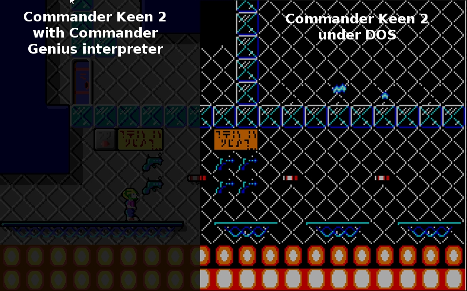

| |
Start/About
Welcome to Commander Genius
Commander Genius aka CloneKeenPlus is an engine
which interprets
Commander Keen 1-3 (Vorticons Series). As fans and developers we try to
implement new features, improve the game play and give the feeling, you
are playing the original game. Obviously you need the game data of the
games to play it. Commander Keen 1 is shareware and free to be
downloaded. Episode 2 and 3 are registered versions which can be
purchased by 3D Realms or Apogee, or bought by someone else. If you
still have the old games of the registered version, then give it a try.
You will be surprised, how well they will look!
The Commander Genius
Team
|
Credits and special thanks to the people
who helped us a lot:
|
We are the
guys who made all that magic possible.
- Developer
and project manager: Gerhard Wolfgang Stein (aka Gerstrong)
- Developer
and port to
GP2X: Scott Smith (aka Pickle)
- Developer
and tester: Albert Zeyer
- Developer,
tester and forum: Pizza2004
- Developer,
resource
administrator and main tester: Tulip
- Composer
of high quality music and tester: DaVince
- Developer
and port to
Dingux: Zear
- Developer
and tester: Casey Bird (FCTW)
- Researching: Lemm
- Ports to Google Android: Pelya
- Developer
and tester: Commander Spleen
- Original
developer of CloneKeen: Caitlin Shaw
|
- James K. Beard
- Ceilick
- Sciz CT
- Iv4n
- Mink
- CKeen
- TheHackerCat
- NY00123
- Malvineos
- Lemm
- Chrisfischtopher
- Hans de Goede
- Levelass
- ZidaneA
- DSL (Cool Icon design)
- Napalm (Information about PC-Speaker
sound)
- ... and many more we might have forgotten
to mention
|
NOTE: We
are currently looking for fans of Commander Keen and developers or
artists, who are interested in helping us. If someone wants to make a
better interpreter for the Commander Keen Series (Also Galaxy series,
Dreams and mods) he is welcome to help us. Just drop an email at: gerstrong@gmail.com
What else?
Well, we also have an IRC Channel. #CommanderGenius at irc.foonetic.net
|
Galaxy and Dreams support
We are working hard on the Commander Genius support for Keen 4-6, Dreams and also its mods like Keen 7-9.
Every
update brings new features and more support. We try to release one per
month, so you can be sure, you always have the newest features.
Not only Windows, Linux or Mac but also other platforms are supported and more will come!
Vorticons support
I
think it mostly runs stable, and the physics are most accurate. If you
want to experience Commander Keen 1-3 with some improvements yet
a classic game play, this is the program for you!
|
|
Features
- 4 Player Mode
- Keys and joystick mapping of your actions
in the game
- Graphic Scalers
- OpenGL Support
- Improved CloneKeen engine. Only small shards of it left
- 3 difficulty modes
- Mod support
- Automatic extraction of data (sounds,
story, etc.) from the exe-files
- Ingame Music support (Yes, music in Keen
1-3!)
- New graphical effects
- Much more performance, because no emulation
- Vorticon HUD
- High Quality Pack support
- and much more...
Check it out today, it's free!
>>
go to the download page here!!
|
|  |
One
Big difference! Right you see Commander Keens dark room when you
are playing the game normally under DOS (or for example DOS-Box). To
the left you see the room using Commander Genius.The darkness depens on
the difficulty, so watch out your step ;-).
|
|
|
|
|